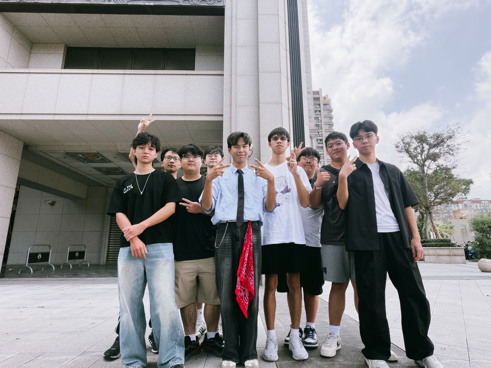
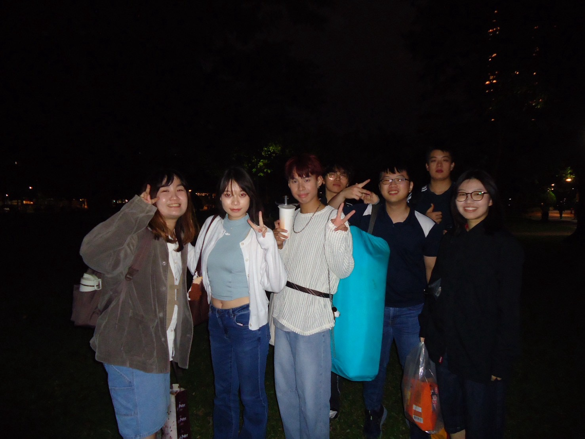
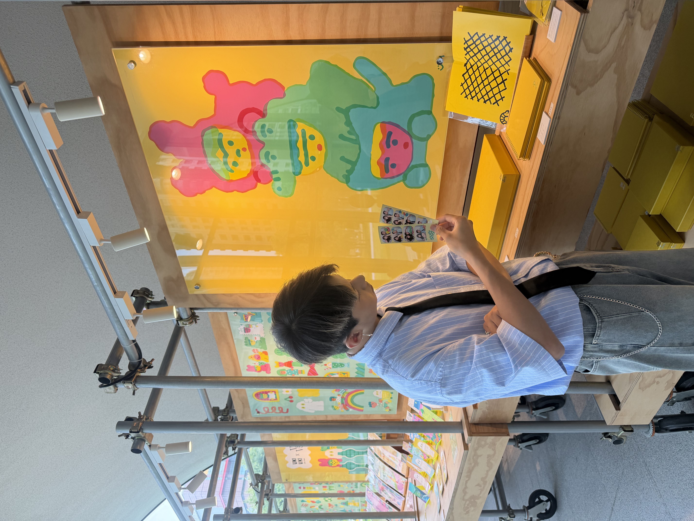

🌿 我的生活樣態
寫程式需要邏輯，但生活需要留白。這是我平常最真實的三種日常狀態：
📷 隨手紀錄生活光影
習慣用手機或相機捕捉下課後的夕陽、巷弄咖啡廳的角落，把平凡的日子留成有溫度的畫面。
☕ 咖啡廳與深夜食堂探險
比起待在宿舍，更喜歡找間有氣氛的小店戴上耳機做事，或是跟朋友在宵夜攤聊到半夜。
🎧 音樂與散步充電模式
遇到卡關或疲憊時，習慣去河濱或街頭走走吹風，讓大腦從程式碼切換回生活頻道。
🎞️ 日常生活照
滑鼠移到照片上預覽，點擊照片可以放大查看完整故事：




📱 歡迎來這些地方找我
我最喜歡在 Instagram 分享限動以及生活碎片，好好生活之餘，也是會乖乖完成跟發展程式技能的！